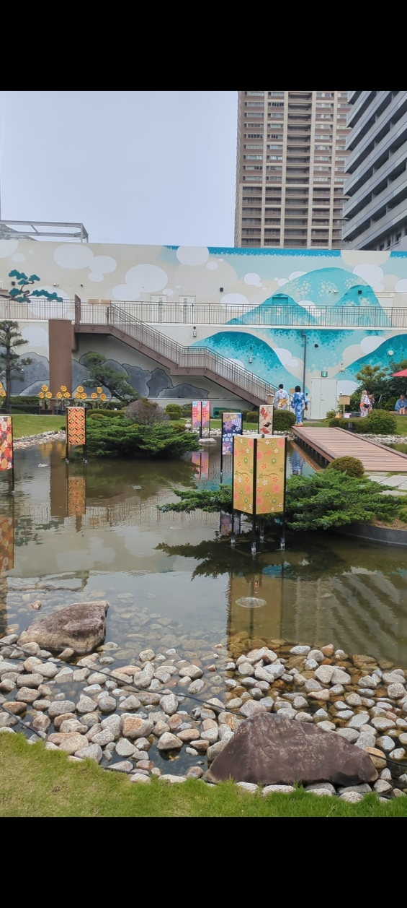
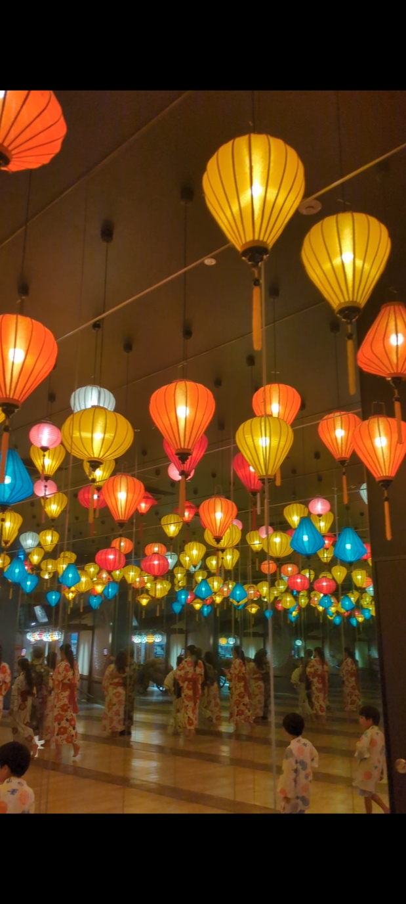
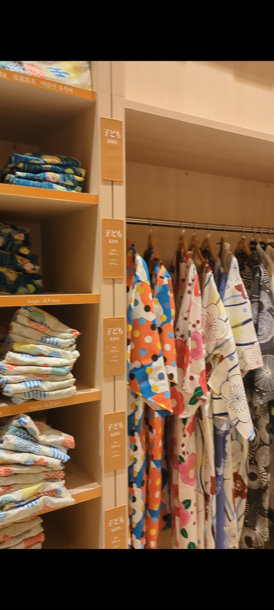

空庭温泉 OSAKA BAY TOWERとはどんな施設か
2019年にオープンした空庭温泉 OSAKA BAY TOWERは、「心満ちる、愉しみの温泉郷」をコンセプトにした関西最大級の温泉型テーマパークだ。古き良き日本の街並みと和モダンなデザインを融合させた館内は、ただ温泉に浸かるだけでなく、浴衣に着替えて縁日や食事処を巡る、まるでミニ旅行のような体験ができる。
総延べ床面積は約5,000坪超という特大スケールで、屋上には約1,000坪の日本庭園「天空庭園」が広がる。この庭園を眺めながら入浴できる「庭見風呂」が、この施設最大の見どころのひとつだ。
Oideyaからのアクセス
Oideya Guest House（神崎川駅）から空庭温泉へ向かうには、梅田を経由するルートが基本になる。神崎川駅から阪急神戸線で大阪梅田駅へ出て、JR大阪環状線に乗り換えて弁天町駅へ。梅田駅から弁天町駅までは電車で約10分ほどなので、Oideyaからのトータルの移動時間は乗り換え時間を含めておおよそ30〜40分程度を見込んでおくとよい。
弁天町駅は空庭温泉の建物に直結しているため、駅を出てから施設入口までほとんど迷うことはない。雨の日でも傘なしでアクセスできるのはうれしいポイントだ。
大阪観光の帰り道に立ち寄るなら、梅田や道頓堀を観光した後、夕方から夜にかけて弁天町へ向かうのがおすすめの流れ。1日歩き回った疲れを、営業終了間際まで温泉で癒してからOideyaに帰ることができる。
料金——曜日によって変動する仕組みを知っておく
空庭温泉の入浴料は、他の日帰り温泉施設と比べてやや珍しい曜日別変動制を採用している。平日が最も安く、週末や特定日にかけて段階的に高くなる仕組みだ。訪問日を選べるなら、この料金体系を把握しておくとお得に楽しめる。
| 区分 | 大人 | 小人（4歳〜小学生） |
|---|---|---|
| 平日 | 2,310円 | 1,320円 |
| 金曜日 | 2,640円 | 1,320円 |
| 土・日曜日 | 3,080円 | 1,320円 |
| 特定日 | 3,300円 | 1,320円 |
| 年末年始 | 3,630円 | 1,320円 |
※4歳未満は無料。70歳以上は割引あり。上記は入湯税（別途150円）を含まない金額の目安。最新の料金は公式サイトでご確認を。
曜日・特定日・年末年始によって料金が細かく変わるため、訪問前に公式サイトでその日の料金を確認しておくことをおすすめする。平日に訪れると、週末より1,000円近く安く楽しめることもある。
お風呂の種類——9種類の湯を巡る
空庭温泉最大の魅力は、その豊富な湯船のバリエーションだ。男女それぞれのエリアに、源泉かけ流しの湯を中心とした個性豊かなお風呂が用意されている。
🌿 源泉かけ流し露天風呂
自家源泉を使用した、この施設の看板とも言える露天風呂。大阪の街中にいながら本格的な温泉気分を味わえる。
🏯 庭見風呂
屋上の約1,000坪の日本庭園を見渡せる特別な湯船。四季折々の景色を眺めながらの入浴は、この施設ならではの体験だ。
💭 炭酸泉
細かな炭酸の泡に包まれる湯船。血行促進効果が期待でき、じっくり浸かりたい人におすすめ。
🔄 日替わり風呂
訪れるたびに違う楽しみがある日替わりの湯船。何度でも通いたくなる工夫のひとつ。
🛁 完全個室の貸切露天風呂
プライベートな時間を過ごしたいカップルや家族連れに人気。大阪湾の景色を独り占めできる贅沢な空間。
🔥 サウナ・あかすり
しっかり整いたい人にはサウナも完備。あかすりのオプションも用意されている。

実際に入ってみて
庭見風呂から眺める天空庭園は、大阪の中心部からわずか数十分の場所とは思えないほど静かで開放的な空間だった。夕方から夜にかけて訪れると、庭園のライトアップと湯気が重なり合う光景は特に印象的。露天風呂でゆったり過ごした後、足湯に浸かりながら庭園を眺める時間も贅沢だった。
お風呂以外の楽しみ方——子どもも大人も夢中になる縁日空間
空庭温泉は「温泉に入るだけの施設」ではない。館内着（浴衣スタイル）に着替えて過ごす和の空間には、以下のような楽しみが用意されている。
👧 子どもが夢中になった縁日スペース
実際に家族で訪れた際、特に印象的だったのが縁日スペースだ。射的やヨーヨー釣りといった昔ながらの縁日の遊びが用意されており、子どもは時間を忘れて遊び続けていた。お風呂に飽きても縁日があるという安心感は、子連れ旅行にとって大きなポイントになる。大人も一緒に懐かしさを感じながら楽しめるので、家族全員が満足できる空間だ。

- 足湯：庭園の短辺いっぱいに広がる広大な足湯。日本庭園を眺めながら足だけ浸かるのも心地よい。
- 岩盤浴：お風呂とは別に、じっくり汗をかきたい人向けの岩盤浴エリアがある。
- 食事処：居酒屋料理や和スイーツが楽しめる食事スペース。人気のブリュレ団子付きソフトドリンクやクラフトビールも。
- 縁日スペース：射的・ヨーヨー釣りなど、浴衣姿で縁日気分を味わえるエリア。子ども連れに特に人気で、写真映えするスポットとしても評判が高い。
- 季節イベント：夏まつりなど、季節に応じたイベントが開催されることもある。
👘 浴衣に着替える体験——外国人ゲストにも大人気
館内では浴衣（または作務衣）に着替えて過ごすスタイルが基本になる。これが想像以上に新鮮な体験で、普段着とは違う特別な時間の始まりを感じさせてくれる。庭園や縁日スペースを浴衣姿で歩いていると、自然と写真を撮りたくなる場面がたくさんあった。
興味深かったのは、外国人観光客も数多く浴衣に着替えて楽しんでいたことだ。日本の伝統的な装いを実際に身にまとい、庭園を背景に写真を撮る姿があちこちで見られ、日本文化を「見る」だけでなく「体験する」場として国籍を問わず人気を集めているのがよくわかった。海外からのゲストを案内するにも、日本らしい思い出作りの場としておすすめできる。

訪問前に知っておきたいポイント
アメニティは充実
タオル・バスタオル・石鹸・ボディーシャンプー・シャンプー・ドライヤーはすべて無料で用意されている。手ぶらで訪れても問題ない。
子ども連れの利用について
4歳未満は入浴料無料。ただし16歳未満のみでの利用は夜19時まで、18歳未満のみでの利用は夜22時までという年齢制限があるため、未成年だけでのグループ利用を予定している場合は注意したい。実際に家族で訪れた印象では、縁日スペースがあることで子どもが飽きずに長時間過ごせるのが大きなメリット。お風呂と縁日を交互に楽しむことで、大人もゆっくり温泉を満喫できた。
駐車場を使う場合
1,100台収容の駐車場があり、入浴利用で2時間分（800円分）の割引が受けられる。ただし、Oideyaから電車で訪れる場合は駐車場を使う機会は少ないだろう。
週末や特定日は特に混み合う傾向がある。平日の午前中（開館直後の11時台）に訪れると、ゆったりとお風呂や庭園を楽しめる可能性が高い。夕方以降は仕事帰りの利用者も増えるため、日中の時間帯が狙い目だ。
Oideya滞在と組み合わせるプラン
実際に訪れてみると、お風呂9種類・庭園・岩盤浴・縁日・食事処・浴衣での散策と、想像以上にボリュームのある施設だった。特に子ども連れや、浴衣を着てじっくり写真を撮りたい場合は、「サクッと立ち寄る温泉」ではなく「空庭温泉そのものを主役にした半日プラン」として組み込む方が満足度が高いと感じた。目的に応じて2つのプランを紹介する。
🌇 プランA：観光の締めくくりに立ち寄る（時間が限られている方向け）
午前〜午後：梅田・道頓堀・大阪城など定番の観光スポットを巡る → 夕方：梅田経由でJR大阪環状線に乗り、弁天町の空庭温泉へ → 夜：露天風呂と庭見風呂でゆったり過ごし、食事処で軽く一杯 → 帰路：弁天町から梅田を経由してOideyaへ戻る。1日中歩き回った疲れを、旅の最後に本格的な温泉で癒すコースだ。
♨️ プランB：空庭温泉を主役にする半日プラン（家族連れ・浴衣体験を楽しみたい方向け）
午後早め（13〜14時頃）：Oideyaから梅田経由で弁天町へ向かい、空庭温泉に入館 → 午後：浴衣に着替えて庭見風呂・露天風呂をゆっくり巡る → 夕方：縁日スペースで子どもと一緒に射的やヨーヨー釣りを楽しむ、または庭園を背景に写真撮影 → 夕食：館内の食事処でゆっくり食事 → 夜：弁天町から梅田を経由してOideyaへ戻る。3〜4時間はゆったり見ておくと、お風呂・縁日・食事のすべてを慌てず楽しめる。
大阪観光に「もうひとつの体験」を加えたい方にとって、空庭温泉は十分に足を延ばす価値のある施設だ。特にファミリーでの訪問や浴衣体験が目的なら、プランBのように時間に余裕を持たせることを強くおすすめする。
大阪観光と日帰り温泉、
両方楽しめる拠点に。
昭和初期の古民家一棟貸し・最大8名・梅田まで電車約5分。梅田・道頓堀への観光アクセスはもちろん、弁天町の空庭温泉へも無理なく足を延ばせる立地。1日の締めくくりに温泉、帰る場所は静かな古民家という贅沢な組み合わせを。Booking.com 8.5点・Traveller Review Awards 2026受賞。
Booking.comで空き確認 →